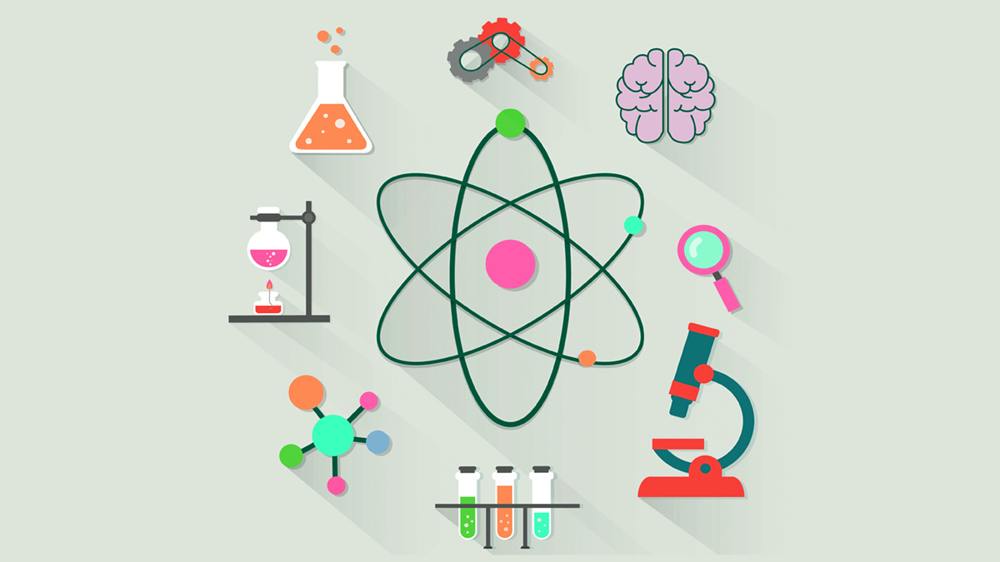

What is Saptkrishi?
Saptkrishi is an IIT-Kanpur-incubated startup which has developed a cost-effective way of extending the life of the perishable produce, using cold storage that farmers or vegetable vendors can set up effortlessly anywhere and save their products from going bad. The product is called SaptKrishi Sabjikothi which is essentially a micro climate storage for fruits and vegetables that is also portable enough to be mounted on hand carts, trucks, e-rickshaws etc. As per data from our surveys, 92% of marginal farmers generate income for their daily household expenses through selling fruits and vegetables. After harvesting them, a farmer takes her produce to the local mandi, which on average lies 14-15 km away. To cover this journey, it would take around a couple of hours. For these few hours, the produce is exposed to a harsh tropical outer environment wherein they lose a lot of water. By the end of two hours, the weight of the produce may fall from 100 kg to anywhere about 96 kg.
What is Sabjikothi?
Preservator/ Sabjikothi is a low- cost, technological solution that extends the shelf life of perishable horticultural produce through the construction of a high-humid near- sterile, ethylene oxidizing micro- climate in an isolated chamber that extends the shelf-life of horticulture produces and also helpful in cutting the chain of COVID transmission.
Uses!
Preservator/Sabjikothi is a wheel mountable storage for transportation of fresh fruits and vegetables. It is a microclimate portable storage that extend the shelf-life of fruits and vegetables anywhere between 5 to 30 days. The entire setup can be unloaded from wheels, and can doubly acts as on-field & on- market storage.

Oxidising Ethylene
Sabjikothi makes use of ethylene oxidising and near-sterile microclimate in an insulated chamber that inhibits pathogen growth, delays ripening and regulates the activity of antioxidant enzymes. It oxidises ethylene into hydrogen, carbon dioxide, water vapour and other small molecules which further creates a controlled atmosphere that helps the produce stay fresh for longer.
Power Consumption
It requires 20 watts of power and one litre of water to help it keep things cool inside. It comes fitted with a battery that is capable of lasting for a whole day on a single charge. However, there is also an option of solar charging to extend the lifespan of the battery, slightly longer.

Store Fruits and Vegetables
It can store up to 200 kilograms of produce at once and is smart enough to change the temperature based on the amount of produce stored. It’s also pretty affordable at Rs 10,000 per unit. There’s another variant that’s designed for traders that is capable of storing up to 500 kilograms of produce and also comes with a mobile app for monitoring the health of the produce as well as other diagnostics.
TECHNOLOGY
Sabjikothi work by construction of self-adaptable, ethylene
oxidizing, and near-sterile microclimate in an insulated chamber.
The controlled microclimate created inside the insulated chamber
inhibit pathogen growth, delays browning as well as ripening and
regulate activity of antioxidant enzyme. It also oxidizes ethylene
into hydrogen, carbon di-oxide, water vapour and other small
molecules which further creates a controlled atmosphere that enables
the storage of fruits and vegetables for anywhere upto 40 days. It
is a self-sustainable solution that only require 20 watt of
electricity either on-grid or off-grid, and a litre of water per
day.
ABOUT US
This IIT-Kanpur-incubated startup has developed a cost-effective way of extending the life of the perishable produce, using cold storage that farmers or vegetable vendors can set up effortlessly anywhere and save their products from going bad. The product is called SaptKrishi Sabjikothi which is essentially a micro climate storage for fruits and vegetables that is also portable enough to be mounted on hand carts, trucks, e-rickshaws etc. As per data from our surveys, 92% of marginal farmers generate income for their daily household expenses through selling fruits and vegetables. After harvesting them, a farmer takes her produce to the local mandi, which on average lies 14-15 km away. To cover this journey, it would take around a couple of hours. For these few hours, the produce is exposed to a harsh tropical outer environment wherein they lose a lot of water. By the end of two hours, the weight of the produce may fall from 100 kg to anywhere about 96 kg.
CERITIFICATES

Our Supporters


Saptkrishi Scientific Pvt. Ltd. IIT Kanpur, U.P, 208017